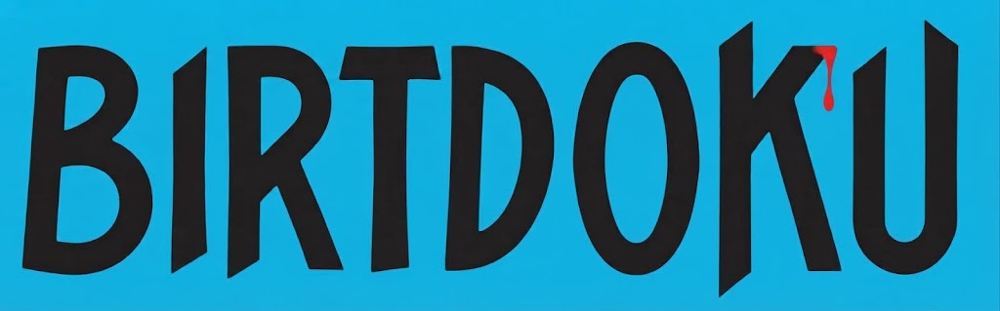

Indicaciones del juego
Reglas
El objetivo del Murdoku es llenar una cuadrícula de 9x9 con números del 1 al 9, de manera que cada fila, columna y cuadrícula de 3x3 contenga todos los números sin repetir.

Reglas
El objetivo del Murdoku es llenar una cuadrícula de 9x9 con números del 1 al 9, de manera que cada fila, columna y cuadrícula de 3x3 contenga todos los números sin repetir.